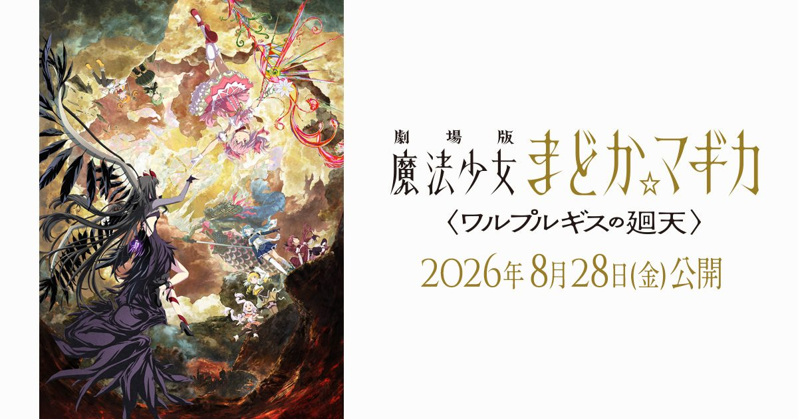

2026-08-14 · 动漫电影
2026 年 8 月 28 日，日本影院要上一部「迟到了 13 年」的电影。它是 2013 年《叛逆的物语》的正统续篇，也是整个《魔法少女小圆》剧场版的第四弹。如果你只在饭圈热搜里见过「小圆脸」「巴麻美」「到底让我们等了多久」，这篇想聊点更硬的东西——为什么一部动画电影能拖到第五年才定档，以及标题里那个「回天」，到底是不是在暗示它要把《叛逆》的结局整个翻过来。

先把时间线摆清楚，因为这本身就是故事的一部分。2011 年 TV 版封神，拿下神户动画奖、文化厅媒体艺术祭、东京动画奖三大奖；2013 年《叛逆的物语》把世界观推到「焰成为恶魔、亲手夺走圆、捏造出一个虚假日常」的悬崖边；然后——就是长达十三年的寂静。中间只给过一段 2015 年的四分钟概念视频，被久保田光俊自己称作「意象板」。
真正的「制作决定」是 2021 年十周年纪念活动上抛出的，当时说 2024 年冬；接着一路跳票：2024 冬 → 2025 冬 → 2026 年 2 月 → 再度延期 → 直到 2026 年 2 月 27 日才钉死「8 月 28 日」。算下来，从官宣到上映整整五年，期间四次改期。这种级别、这种体量的「鸽」，在动画电影史上都算标本级。而粉丝的反应反而很魔幻：正式预告一解禁，推上全是「看预告就哭了」「到底让我们等了多久」。等待本身，已经成了这部电影的第一层叙事。
核心班底原样保留。总监督新房昭之、监督宫本幸裕、脚本虚渊玄（Nitro+）、角色原案苍树梅、角色设计谷口淳一郎、异空间设计剧团犬咖喱、音乐梶浦由记——这串名字和 2011 年 TV 版几乎一字不差。换句话说，这不是「换个团队炒冷饭」，而是同一群人花了十三年去还一笔债。梶浦交出的主题曲《彼方》由 FictionJunction 演唱，延续了她给小圆写「圣歌式哀伤」的本能。
真正的变化在两点。其一是配音：原班人马全员回归（悠木碧的圆、斋藤千和的焰、水桥香织的麻美、喜多村英梨的沙耶香、野中蓝的杏子、阿澄佳奈的渚、加藤英美里的丘比），但新增了两个名字——若山诗音配「紫丁香（チョウカ・シ）」、黑泽朋世配「セルマ・テレーゼ」。这两个新角色站在哪一边，是目前最大的悬念。其二是监督阵容从「新房+宫本」扩展成一整排演出班底（安藤良、滨崎博嗣、神保昌登、今泉贤一、miah、向井雅浩、宫本幸裕等），制作规模肉眼可见地比《叛逆》更厚。
官方剧情简介藏着三个钩子。第一，世界表面「平衡但脆弱」；第二，出现了「不持有灵魂宝石的少女」进行魔兽狩猎的异常事态——注意，没有灵魂宝石，意味着她不受魔女轮回束缚，这几乎是在明示「圆可能以某种新形态回来」；第三，两位「寻求圆环之理的魔法少女」登场，并对焰说出「绝不原谅晓美焰」。再加上那个都市传说般的「蜥蜴先生电话」——一个能实现愿望、代价是与诅咒战斗的电话。钩子密度，比《叛逆》还高。
上一部的标题是《叛逆》（Rebellion），讲的是焰拒绝接受圆的牺牲、反过来反叛「圆环之理」；这一部叫《回天》（Walpurgisnacht: Rising / ワルプルギスの廻天），「回天」在日语里是「挽回局势、逆转天命」的意思。一字之差，格局完全变了：背叛是一个人的执念，回天是宇宙级的对撞。
更关键的信号来自反派设定。瓦尔普吉斯之夜（Walpurgisnacht）在所有魔女的设定里，是「一切魔女起始之地」——也就是圆当年许愿消灭所有魔女之前，那个最古老、最巨大的魔女集合体。它回来了，而且是在「圆环之理已失效、焰以恶魔之身君临世界」的前提下回来。这等于把第一集开篇的那个终极威胁，重新摆到了被篡改过的世界里。所以「回天」很可能不是在说「焰要救谁」，而是在问：当恶魔焰伪造的和平被撕开，当所有魔女的源头重新降临，这个被改写过的宇宙，还回得去吗？
我们也得诚实地说一个风险：十三年的期待是一把双刃剑。粉丝脑子里早就各自写完了续作，任何官方答案都很难同时满足所有人。虚渊玄最擅长的，恰恰是把观众最想要的东西递到你手边，再当着你的面把它拧碎。《回天》会不会又一次「你以为是大团圆，结果是更深的轮回」？从《叛逆》的尾骨折磨来看，这种可能性不低。但反过来，如果它真能收住这条从 2011 年就埋下的线，那它就不只是一部续作，而是给一个时代正式画句号。
我们的评分：9.0 / 10（单方面期待值）。扣的那 1 分不是给电影，是给「十三年后的任何答案都可能让人意难平」这种结构性风险。但就「一个 IP 愿意用五年跳票去把事做对」这件事本身，我们愿意先给满分诚意。
我们的观察：SHAFT 的「剧团犬咖喱拼贴异空间」美学十三年没变，这反而是定心丸——它说明制作不是为了赶工翻新，而是要让视觉语言无缝接上《叛逆》。新房+虚渊玄+苍树梅+梶浦这条铁三角还在，是这部电影最大的质保。
我们的观点：别把「回天」读成「团圆」。它更像是在问「被改写的命运，有没有可能被逆转回来」。带着「看一个大结局」的心态去，大概率会被反将一军；带着「看创作者如何给十三年的执念一个交代」的心态去，反而更能接住它。
我们的案例 / 对比：长跳票续作里，有人翻身（如《凉宫春日的消失》等了三年仍封神），也有人翻车（不少「十年后回归」的 IP 被情怀反噬）。小圆目前站在前者那一侧的概率更高，因为它跳的不是「偷懒」，是「重做」。
我们的实验：给完全没看过的人做了条最小回坑路线——TV 全 12 集（前 3 集千万别跳，那是著名的「三集定律」陷阱）→ 总集篇《起始的物语 / 永远的物语》→ 《叛逆的物语》→ 8/28 的《回天》。直接进影院等于看一部你早就被剧透完的谜题，血亏。
8 月 28 日日本上映，中国台湾地区 9 月 4 日、香港地区 10 月 8 日紧随。它未必是今年最符合你预期的电影，但它几乎一定是今年「情感当量」最重的那一部。如果你曾是那个守在屏幕前为圆流泪的人，这一张票，买的不是 120 分钟动画，是给 2011 年那个自己的一次正式告别。至于「回天」最后是救赎还是更深的回旋——等散场灯亮，我们影院门口见。